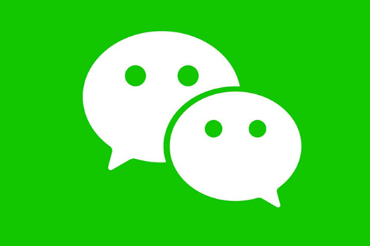

纹桃在上个月发过一篇《史上最全VX封号机制及解决方案》，文章发出之后不少棋牌从业者在后台留言咨询VX防封相关的问题。其实VX防封最重要的一步是在于养号，如果你连VX的机器算法都没有绕过去，那么做再多措施都是徒劳。为此纹桃请教了专业人士，今天就和大家分享一下：从VX养号层面上应该怎么做？

VX养号首当其冲的就是如何获得电话卡，不要使用170段的电话卡，腾讯是屏蔽的。某宝也不行，买的号码不安全，因为有的号码可能已经上了VX黑名单或者已经绑定在别人的VX号上了。
如果想批量操作，建议拿公司的营业执照去当地电信营业厅开卡，大概能开50-100张，如果有关系能开更多。新注册的VX号，加好友时都会提示不满3个月的新号，这会大大降低别人同意你加好友的概率，所以想要消除这个提示，就必须养号！
1、首先给大家说一个叫做“养号33天”的操作，这也是当前养号行业的一个主要标准，意思就是一个VX号需要养满33天才能进行营销行为或者转卖出售。为什么是33天呢？因为一个新注册的VX号在一开始的30天内是一个“空窗期”，一旦VX号存活满30天，就基本进入“白名单”了，之后就可以正常使用VX官方的各种功能不再有诸多限制了。再多3天的原因就是，这3天是用来进行登陆设备转移或者设置VX注册信息的，因此这整个过程被称为养号33天。
2、做一个腾讯喜爱的用户不知道大家还记不记得以前学生时代玩QQ的时候，大家总会相互比较谁的QQ号点亮的业务图标更多。实际上你点亮的图标越多就越能够获得更高的账号权重，也就是腾讯所喜爱的用户。VX也是同样的道理，如果你能够在VX中深深烙下腾讯业务忠实用户的烙印，那么自然就能获得更高的账户权重，不容易被封号。
那么下面我就结合养号33天和做腾讯喜爱用户来告诉大家如何完成这样一个周期的养号操作。首先我们为了后续的操作方便，请大家准备多张腾讯大王卡，以及多台手机设备。腾讯大王卡可以免流量使用腾讯旗下的业务产品，能够节约我们的成本。但最重要的是用大王卡号码注册的VX号能够在一定程度上有效防封。
第一天：登陆账号、完善个人资料。登陆VX账号一定是用官方的VX客户端，不要使用任何多开软件。（任何ROOT过的手机设备，都可能被腾讯定义为可能存在营销软件，很容易头天注册第二天就封。）登陆账号后请立即用3个左右VX大号主动添加新VX号为好友。完善个人资料，包括头像、姓名、VX号、地区、性别等，保证在VX页面停留超过30分钟。（一个正常人使用的VX号，会设置VX号，银行卡，绑定手机，邮箱，设置密码和修改个人地址等等，这些基本的信息齐全了的话，权重就会上升，VX号就越过被秒封的危险了。）所有过程中请不用在同一个WIFI下操作，新VX号建议使用腾讯王卡的流量，进行操作。（如果使用同一WIFI会被视为在同一IP下进行操作，容易被腾讯进行检测。）
第二天：建群聊天，初步打下腾讯烙印。所有新号都加同一个VX老号为好友，然后由老好将这批新号拉入同一个VX群，进去后修改群名片。每一个新号都需要在VX群里发言，随机聊天。所有新号按4个一组相互添加好友。于晚上8点左右，每组账号组队邀请进行腾讯吃鸡手游2局左右。（这一步就是在打下腾讯烙印，模拟用户真实行为，邀请VX好友参与游戏提高账号权重，由于这款游戏是当前腾讯主推，就效果上来说比其他游戏更好，并且只要放弃抵抗很快就能完成游戏，请务必每天进行这个操作。
第三天：公众号关注、钱包浏览、重复操作。每个新号都打开腾讯新闻，进行5分钟左右新闻浏览，并转发至朋友圈。每个新号都关注人民日报、腾讯信用等官方类公众号，以及娱乐性公众号各两个，并完成4个公众号共计5分钟左右的推文停留时间。
打开VX钱包的二级菜单进行逐一浏览操作。重复好友群聊、看腾讯新闻、玩手游等操作。
第四天：领取与发红包、进行好友聊天、重复操作。由被添加的VX老号向所有新号发红包，金额在1元钱左右。然后在新号群内发0.5元左右红包，让老号收回。（这样做的主要目的就是保证新号账户内拥有资金，并存在真实用户发红包的操作，使用VX作为社交软件的功能打下腾讯烙印。）每组账号进行好友私聊，逐一完成。重复好友群聊、看腾讯新闻、玩手游等操作。
第五天：发朋友圈、加好友、重复操作。准备好不同图片文字，在新号里发朋友圈，照片文字以私人生活写照为主。用通讯录导入10个手机号，主动打招呼添加好友。重复好友私聊群聊、看腾讯新闻、玩手游等操作。
第六天：搜索加友、重复操作。通过手机号、QQ号、VX号等添加非同组新号为好友，不超过5个。重复发朋友圈、好友私聊群聊、看腾讯新闻、玩手游等操作。
第七天：VX授权、重复操作。用新号登陆注册网易云音乐等APP，并转发音乐到朋友圈。重复发朋友圈、添加其他新号为好友、好友私聊群聊、看腾讯新闻、玩手游等操作。
接下来的23天依次将这些操作动作都重复执行，在此期间，绝不能更换设备登陆，切勿主动加粉超过5人，不要打开附近的人、摇一摇、漂流瓶这三个功能。
30天结束后没有封号的VX，即列入VX白名单，成为正常社交账号。接下来的3天可以进行更换设备登陆等其他行为，后期继续精心维护，这样被封号的概率就很低了。
渡过养号33天后，这个VX号就相当于满月成型，可以用来进行营销操作了。相信在这个情况下，大家做的第一件事就是不断加人，请大家在加人过程中注意以下一些规则：
1、讯录导入：一天30左右
2、查找添加：一天查找30人左右
3、扫一扫：一次添加15个
4、摇一摇：一次只能摇10个
5、面对面建群：现场能建100人群
6、被动添加：24小时只能加260人
7、主动添加：24小时不超过30人
8、好友上限：5001-5006人
二.除了这些以外，需要注意的VX官网隐藏规则：
1、一部手机一天之内不要注册超过2个VX号，用官方版注册，当注册下一个请删掉这个VX，重新下载安装注册VX
2、一个手机不要一天轮流登录5个VX号
3、同一个IP网段同时段同位置登录30个以上的VX号有环境异常风险
4、用VX多开或者模拟器注册，第二天一定会被封号
5、更换设备前请先从当前设备退出账号，没退出就强制登陆这种情况90%被检测封号
6、摇一摇、搜索附近的人少用，一天内不要过于频繁操作，不要频繁主动加好友
7、一般在月初或在月底，腾讯容易封号，建议这些时间不要过度营销。⑧营销过程中朋友圈注意发送频率和数量，尽量屏蔽发生过不愉快的好友或者心怀不轨的同行，防止被举报
注：如果好友数量在3000以上，发朋友圈时约有15%-20%的好友是看不到你发的内容的，好友数量达到5000人时，约有30%的是看不到你发的内容，因此1个VX好友加到3000人就足够。纹桃科技致力于棋牌游戏开发15年，拥有大量棋牌游戏成功案例。
想开发一款迅速盈利的棋牌游戏，欢迎咨询热线电话：18711739336

扫码二维码咨询更多棋牌游戏问题

游戏产品
PRODUCTS

售后服务
SERVICE

技术支持
TECHNOLOGY

运营指导
OPERATING